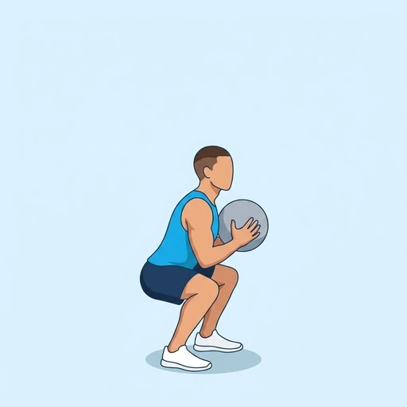
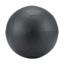

Wall Ball
A full-body conditioning exercise that joins a front squat and a throw: holding a soft wall ball at your chest, you squat down, drive up and throw the ball to a target high on a wall, then catch it and go straight into the next squat. The legs and hips produce the power and the arms finish the throw.
Full body · Wall Ball · Intermediate

Muscles worked by the Wall Ball
Primary
Secondary
Also called: glute, glutes, gluteus maximus, buttocks, butt, quad.
Equipment

Wall BallAlso called: soft medicine ball, crossfit wall ball, dynamax wall ball.
How to do the Wall Ball
- Stand facing a wall about an arm's length away, feet shoulder-width apart, holding the ball at your chest with both hands.
- Keep your elbows under the ball and your chest up.
- Squat down until your hips are at or below knee height, keeping your heels on the floor.
- Drive up hard through your legs and hips and, as you rise, throw the ball up to the target with both arms.
- Catch the ball at chest height as it comes down, letting your arms absorb it.
- Go straight into the next squat with the catch and repeat for the planned repetitions.
Form tips
- Let the legs throw the ball: the push from the squat should carry it most of the way, the arms only finish the movement.
- Keep your chest up and the ball close to your body in the squat so your back stays neutral.
- Catch and squat in one movement; resting with the ball at the top breaks the rhythm and tires the shoulders.
At a glance
| Body part | Full body |
|---|---|
| Category | Strength |
| Force type | Push |
| Mechanic | Compound |
| Difficulty | Intermediate |
| Equipment | Wall Ball |
| Goals | Power, Endurance |
| Tags | Full body, Leg day, Conditioning, Ballistic |
| MET | 6.0 (metabolic equivalent, for calorie estimates) |
| Unilateral | No |
| Bodyweight | No |
| Dataset id | wall-ball |
Wall Ball in German & Spanish
| German | Wall Ball |
|---|---|
| Spanish | Wall Ball |
Descriptions, instructions and tips ship in all three languages in the JSON.
Related exercises
Exercise data (JSON)
The record below is exactly what exercises.json ships for this exercise — names, descriptions, instructions and tips in English, German and Spanish.
{
"id": "wall-ball",
"name_en": "Wall Ball",
"name_de": "Wall Ball",
"name_es": "Wall Ball",
"description_en": "A full-body conditioning exercise that joins a front squat and a throw: holding a soft wall ball at your chest, you squat down, drive up and throw the ball to a target high on a wall, then catch it and go straight into the next squat. The legs and hips produce the power and the arms finish the throw.",
"description_de": "Eine Ganzkörperübung für die Kondition, die eine Frontkniebeuge mit einem Wurf verbindet: Du hältst einen weichen Wall Ball vor der Brust, gehst in die Kniebeuge, drückst dich kraftvoll hoch und wirfst den Ball an ein Ziel hoch oben an der Wand, fängst ihn dann und gehst direkt in die nächste Kniebeuge. Beine und Hüfte erzeugen die Kraft, die Arme vollenden den Wurf.",
"description_es": "Un ejercicio de acondicionamiento de cuerpo completo que combina una sentadilla frontal y un lanzamiento: sujetando un balón medicinal grande y blando a la altura del pecho, bajas en sentadilla, subes con fuerza y lanzas el balón a un objetivo situado en lo alto de una pared; después lo atrapas y pasas directamente a la siguiente sentadilla. Las piernas y las caderas generan la potencia y los brazos terminan el lanzamiento.",
"category": "strength",
"force_type": "push",
"mechanic": "compound",
"difficulty": "intermediate",
"equipment": "wall_ball",
"body_part": "full_body",
"primary_muscles": [
"gluteus_maximus",
"quadriceps"
],
"secondary_muscles": [
"anterior_deltoid",
"rectus_abdominis",
"triceps_brachii"
],
"goals": [
"power",
"endurance"
],
"tags": [
"full_body",
"leg_day",
"conditioning",
"ballistic"
],
"is_unilateral": false,
"is_bodyweight": false,
"instructions_en": [
"Stand facing a wall about an arm's length away, feet shoulder-width apart, holding the ball at your chest with both hands.",
"Keep your elbows under the ball and your chest up.",
"Squat down until your hips are at or below knee height, keeping your heels on the floor.",
"Drive up hard through your legs and hips and, as you rise, throw the ball up to the target with both arms.",
"Catch the ball at chest height as it comes down, letting your arms absorb it.",
"Go straight into the next squat with the catch and repeat for the planned repetitions."
],
"instructions_de": [
"Stelle dich mit Blick zur Wand etwa eine Armlänge davor, die Füße schulterbreit, und halte den Ball mit beiden Händen vor der Brust.",
"Halte die Ellbogen unter dem Ball und die Brust oben.",
"Gehe in die Kniebeuge, bis die Hüfte auf oder unter Kniehöhe ist, und lass die Fersen am Boden.",
"Drücke dich kraftvoll über Beine und Hüfte nach oben und wirf den Ball beim Hochkommen mit beiden Armen zum Ziel hinauf.",
"Fange den Ball auf Brusthöhe, wenn er herunterkommt, und lass deine Arme ihn abfedern.",
"Gehe mit dem Fangen direkt in die nächste Kniebeuge und wiederhole für die geplante Anzahl an Wiederholungen."
],
"instructions_es": [
"Ponte de pie frente a una pared, a aproximadamente un brazo de distancia, con los pies separados al ancho de los hombros y el balón sujeto a la altura del pecho con ambas manos.",
"Mantén los codos debajo del balón y el pecho alto.",
"Baja en sentadilla hasta que las caderas queden a la altura de las rodillas o por debajo, manteniendo los talones en el suelo.",
"Sube con fuerza empujando con las piernas y las caderas y, mientras te levantas, lanza el balón hacia el objetivo con ambos brazos.",
"Atrapa el balón a la altura del pecho cuando baje, dejando que los brazos amortigüen el impacto.",
"Encadena la recepción directamente con la siguiente sentadilla y repite el número de repeticiones previsto."
],
"tips_en": [
"Let the legs throw the ball: the push from the squat should carry it most of the way, the arms only finish the movement.",
"Keep your chest up and the ball close to your body in the squat so your back stays neutral.",
"Catch and squat in one movement; resting with the ball at the top breaks the rhythm and tires the shoulders."
],
"tips_de": [
"Lass die Beine den Ball werfen: Der Schub aus der Kniebeuge sollte ihn den größten Teil des Weges tragen, die Arme vollenden nur die Bewegung.",
"Halte die Brust oben und den Ball in der Kniebeuge nah am Körper, damit dein Rücken neutral bleibt.",
"Fange den Ball und gehe in einer Bewegung in die Kniebeuge; pausierst du oben mit dem Ball, bricht der Rhythmus und die Schultern ermüden."
],
"tips_es": [
"Deja que sean las piernas las que lancen el balón: el impulso de la sentadilla debe llevarlo la mayor parte del recorrido y los brazos solo terminan el movimiento.",
"Mantén el pecho alto y el balón cerca del cuerpo en la sentadilla para que la espalda se mantenga neutra.",
"Atrapa el balón y baja en sentadilla en un solo movimiento; descansar con el balón arriba rompe el ritmo y cansa los hombros."
],
"met": 6.0,
"images": {
"flat": {
"main": "images/flat/wall-ball-main.webp"
}
}
}Fetch just this exercise
const { exercises } = await fetch(
"https://exercise-dataset.com/exercises.json"
).then(r => r.json());
const ex = exercises.find(e => e.id === "wall-ball");Free for personal and commercial in-app use with attribution (“Exercise data by RepDB”) — see the license and ready-made attribution snippets. Redistributing the data as a dataset or API is not permitted.